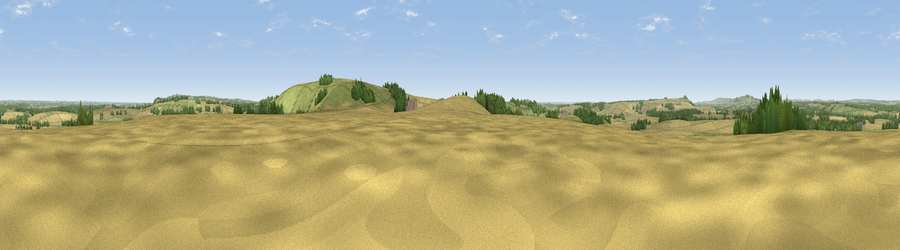

Viewpoint near East Grafton
#15344 in England · top 24% of its area beats it · near East GraftonThe view, rendered

A 360° render of this exact spot computed from the terrain model, tree cover and land cover — summer colours, afternoon light, calibrated against photographs of famous viewpoints. Real trees, hedges and buildings will differ in detail.
The panorama
Grey silhouette: terrain skyline in each direction (720 bearings, Earth curvature and refraction included). Dashed green: skyline with trees (+15 m) and buildings (+8 m) as obstacles. Blue strip: how far the ground is visible on each bearing.
Where the view opens
Wedge length = distance to the farthest visible ground on that bearing (vegetation-aware). Rings at 10, 25 and 50 km.
What fills the view
52% cropland · 34% grassland · 14% woodland ·
Angular shares of the visible panorama (visual magnitude), not map area. Landscape diversity 0.44 (0–1 Shannon).
Key numbers
More beautiful places nearby
The staircase of upgrades: each row has a higher view potential than everything closer. Driving times are estimates from straight-line distance, calibrated against real road routing — check an actual route before setting out.
| Place | Direction | Drive | Score |
|---|---|---|---|
| Viewpoint near Tidcombe | SE · 1 km | ~4 min | 61.3 |
| Wexcombe Down | SE · 2 km | ~4 min | 66.9 |
| Viewpoint near Ham | ENE · 9 km | ~17 min | 67.2 |
| Inkpen Hill | ENE · 9 km | ~19 min | 69.8 |
| Martinsell viewpoint | WNW · 10 km | ~19 min | 77.3 |
| Viewpoint near Berwick St John | SW · 51 km | ~72 min | 78.2 |
| Viewpoint near Buriton | SE · 59 km | ~82 min | 80.0 |
| Viewpoint near Stinchcombe | NW · 66 km | ~89 min | 80.5 |
51.32874, -1.61929 · source: osm peak · position refined by local search. Computed location — check access rights before visiting.